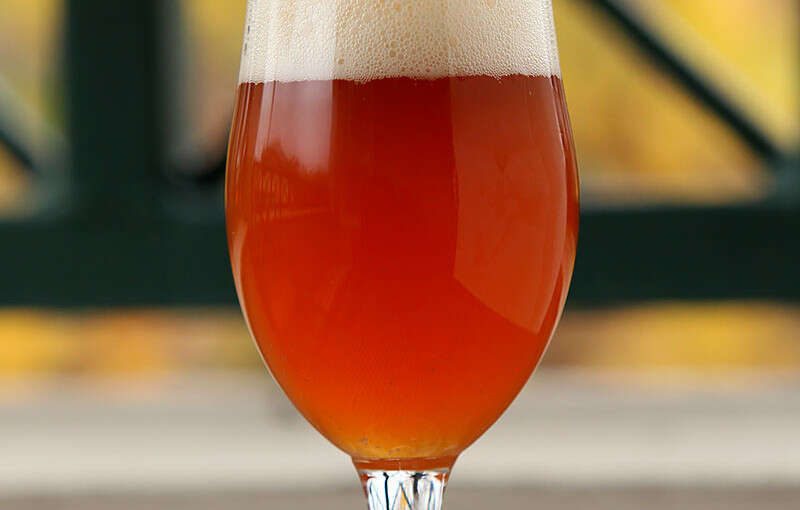
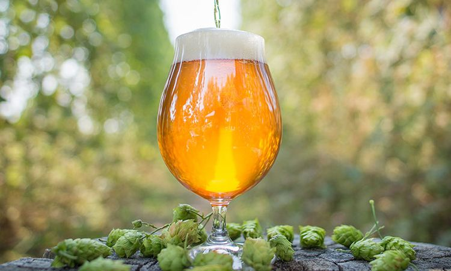

La selección que ofrecemos en ConejoBlanco

Las IPA se caracterizan por ser cervezas de alta graduación alcohólica (entre 5º y 7º), tener una mayor cantidad de lúpulo y por lo tanto un amargor (a partir normalmente de los 40 IBUs) y aroma intensos y cierta complejidad en el paladar.

Las Blonde Ale suelen ser de color amarillo pálido o dorado. Tienen un cuerpo ligero, poco amargor y aroma a lúpulo y algunos toques dulces (debido a la malta). Por eso las Blonde son conocidas como el estilo de cerveza artesanal para iniciarse. ... Las Blonde Ale suelen ser de color amarillo pálido o dorado.


Las cervezas belgas del tipo Golden Ale se caracterizan por tener un color amarillo pálido cristalino que las diferencia del resto de cervezas ale. Esto se consigue con un largo madurado a temperaturas bajas, lo que le da una limpieza excepcional y un sabor refinado, gracias al cold crashing.

El término Stout significaba “fuerte” y podía relacionarse a cualquier tipo de cerveza, siempre y cuando tuviera un volumen de alcohol (Alcohol by Volume) mucho más alto que el promedio.